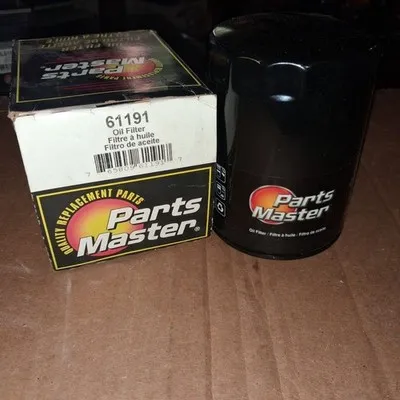

Ignition Points
1966-1979 KEM W8 Ignition Points Volkswagen Beetle Volvo 244 BMW 2002 2000 1800
W8
Fits 1970-1972 Audi 100 Series · 1980 Audi 4000 (742 listed)
$21.99
View details20 parts whose listing names at least one Audi vehicle, mostly engine parts, ignition & tune-up and air filters. Fit depends on year, model and engine, so check the full vehicle list on each part page or message us before you buy.
20 parts
Online checkout through Square. Ships from Carbondale, PA, or pick up by confirmed appointment only. Fitment question? Message us.
W8
Fits 1970-1972 Audi 100 Series · 1980 Audi 4000 (742 listed)
$21.99
View details
W2037
Fits 1980-1986 Audi 4000 · 1985-1987 Audi 4000 Quattro (477 listed)
$12.99
View details
BD97064
Fits 1980-1984 Audi 4000 · 1981-1982 Audi Coupe (687 listed)
$19.99
View details
H2108
Fits 1978-1980 Audi 5000 · 1975-1977 Audi Fox (3000 listed)
$12.99
View details
95017
Fits 1982-1983 Audi 4000 · 1988-1990 Audi 80 (316 listed)
$19.99
View details
01-10805S
Fits 1998-2006 Audi A4 · 2002-2006 Audi A4 Quattro (227 listed)
$24.99
View details
31527
Fits 1972-1977 Audi 100 Series · 1973-1979 Audi Fox (3000 listed)
$16.99
View details
31720
Fits 1989 Audi 100 · 1989 Audi 100 Quattro (3001 listed)
$21.99
View details
33209
Fits 1980 Audi 4000 · 1988-1990 Audi 80 (440 listed)
$25.99
View details
112 133 0001
Fits 1997-2001 Audi A4 · 1997-2001 Audi A4 Quattro (52 listed)
$16.99
View details
BD61988
Fits 1994-1998 Audi Cabriolet · 1990-1991 Audi Coupe Quattro (7 listed)
$59.99
View details
61191
Fits 2005-2006 Audi A4 · 2005 Audi A4 Quattro (30 listed)
$13.99
View details
61393
Fits 1988-1990 Audi 80 · 1998-2005 Volkswagen Beetle (298 listed)
$12.99
View details
62472
Fits 2007 Audi TT · 1998-2010 Volkswagen Beetle (331 listed)
$24.99
View details
67204
Fits 2013-2018 Audi Q5 · 2013-2016 Audi S5 (68 listed)
$13.99
View details
03600
Fits 1980 Audi 4000 (4 listed)
$22.99
View details
03615
Fits 1980 Audi 4000 · 1980-1985 Volkswagen Jetta (145 listed)
$23.99
View details
PS-226
Fits 1999-2000 Audi A4 · 1985-1999 Volkswagen Golf (286 listed)
$24.99
View details
24822
Fits 2000-2006 Audi TT · 1994-1998 Volkswagen Golf (61 listed)
$21.99
View details
42295
Fits 1996-2004 Audi A4 · 1998-2006 Audi A6 (20 listed)
$29.99
View details